Japan / Hokkaido / Nakasatsunai
Nakasatsunai
Nakasatsunai · Hokkaido
Nakasatsunai
Highlighted on the Hokkaido map.
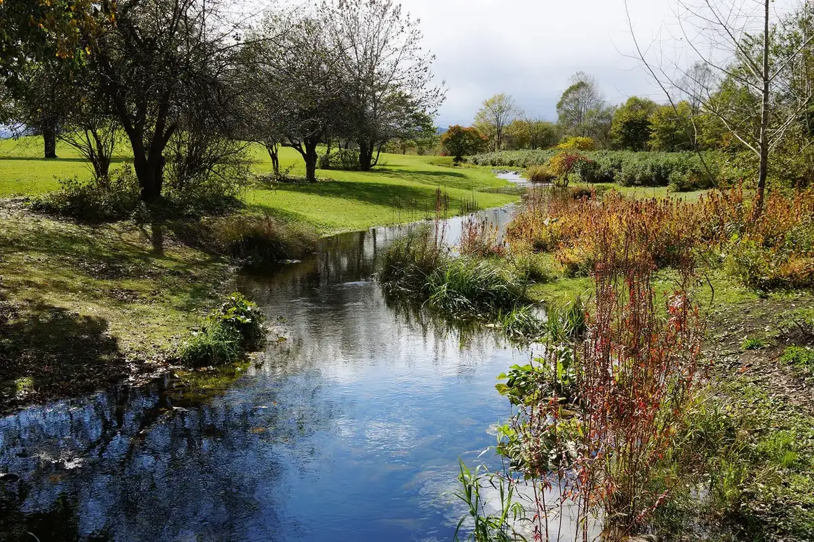
Stay
十勝・中札内 グランピングリゾート フェーリエンドルフ
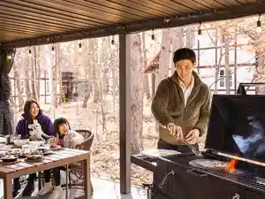
Tokachi Nakasatsunai Guranpingurizooto Feeriendorufu
エゾリス君の宿カンタベリー
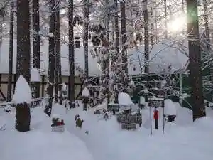
Ezorisu Kun No Yado Kantaberii
Dining
ハレノヒ珈琲店
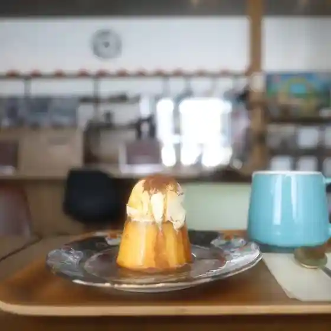
Harenohi Koohii Mise
le bleu wine&food
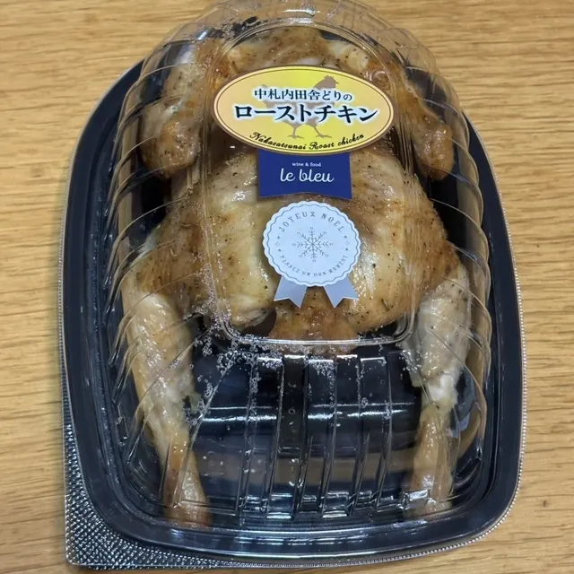
Le Bleu Wine&Food
グルマン
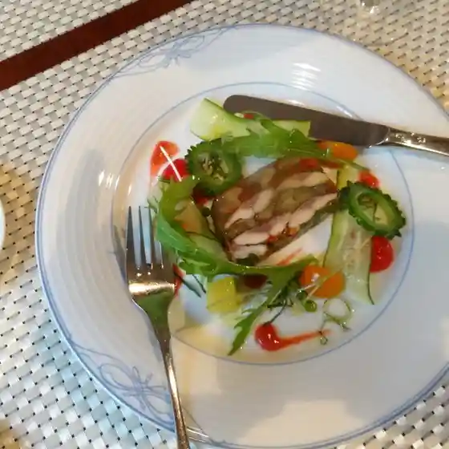
Guruman
岡本農園
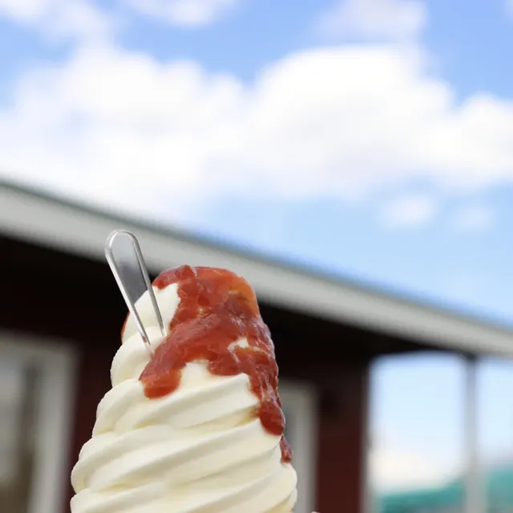
Okamoto Nouen
道の駅なかさつない 花水山
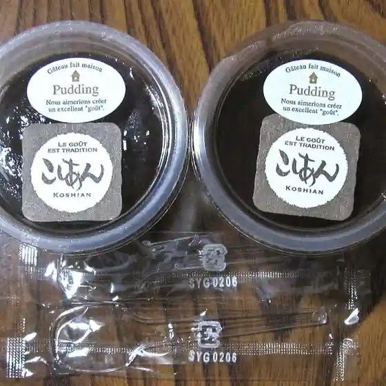
Michi No Eki Nakasatsunai Kasui Yama
六花の森
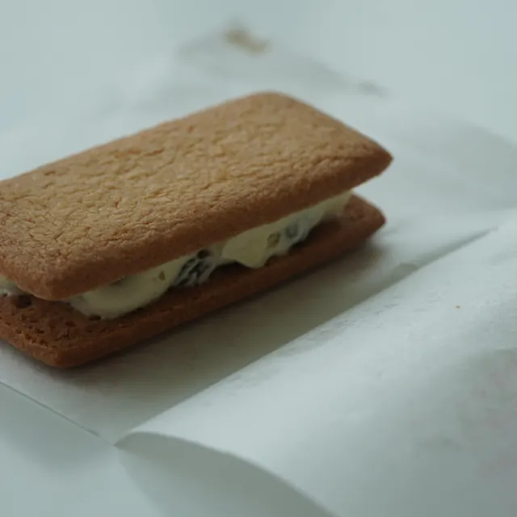
Rikka No Mori
フルーツコーン
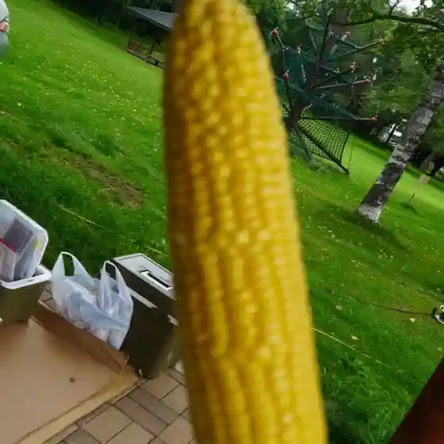
Furuutsukoon
YUKI
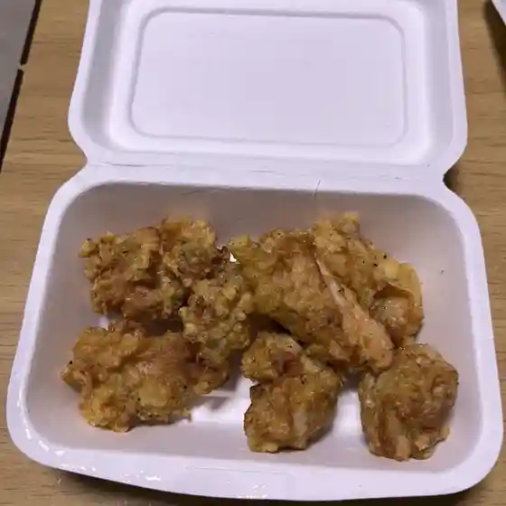
Yuki
花畑牧場カフェ
Hanahata Bokujou Kafe
レストラン チュプ
Resutoran Chupu
鳥ふじ
Tori Fuji
焼肉 開拓村
Yakiniku Kaitaku Mura
ポロシリ
Poroshiri
畑のキッチン あんてぃー
Hatake No Kitchin Anteii
カフェ ディンケルス
Kafe Dinkerusu
花畑牧場 ラクレットカフェ
Hanahata Bokujou Rakurettokafe
てんとうむし
Tentoumushi
ラーメン寶龍 中札内店
Raamen Houryuu Nakasatsunai Mise
ファームレストラン野島さんち
Faamuresutoran Nojima Sanchi
Hamaro Garu
Hamaro Garu
ホエー豚亭
Hoee Buta Tei
中札内村農協食堂
Nakasatsunai Mura Noukyou Shokudou
ウェザーコックカフェ
Uezaakokkukafe
紅や
Kurenai Ya